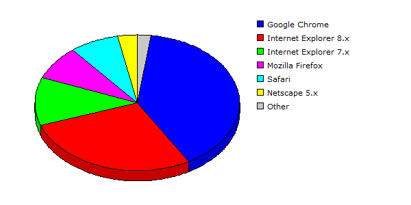

| Rank |
Browser |
Hits |
Visitors |
| 1 |
Google Chrome |
45785 |
28.52% |
3349 |
39.43% |
| 2 |
Internet Explorer 8.x |
65221 |
40.63% |
2373 |
27.94% |
| 3 |
Internet Explorer 7.x |
24546 |
15.29% |
980 |
11.54% |
| 4 |
Mozilla Firefox |
7753 |
04.83% |
687 |
08.09% |
| 5 |
Safari |
11272 |
07.02% |
657 |
07.74% |
| 6 |
Netscape 5.x |
5196 |
03.24% |
264 |
03.11% |
| 7 |
Mozilla |
641 |
00.40% |
150 |
01.77% |
| 8 |
Internet Explorer 6.x |
14 |
00.01% |
14 |
00.16% |
| 9 |
HTTPClient |
10 |
00.01% |
9 |
00.11% |
| 10 |
Opera |
95 |
00.06% |
5 |
00.06% |
| 11 |
Netscape 4.x |
11 |
00.01% |
5 |
00.06% |
| |
Total |
160544 |
8493 |
|
Description: This report contains statistics about the browsers that your visitors use.
|
|